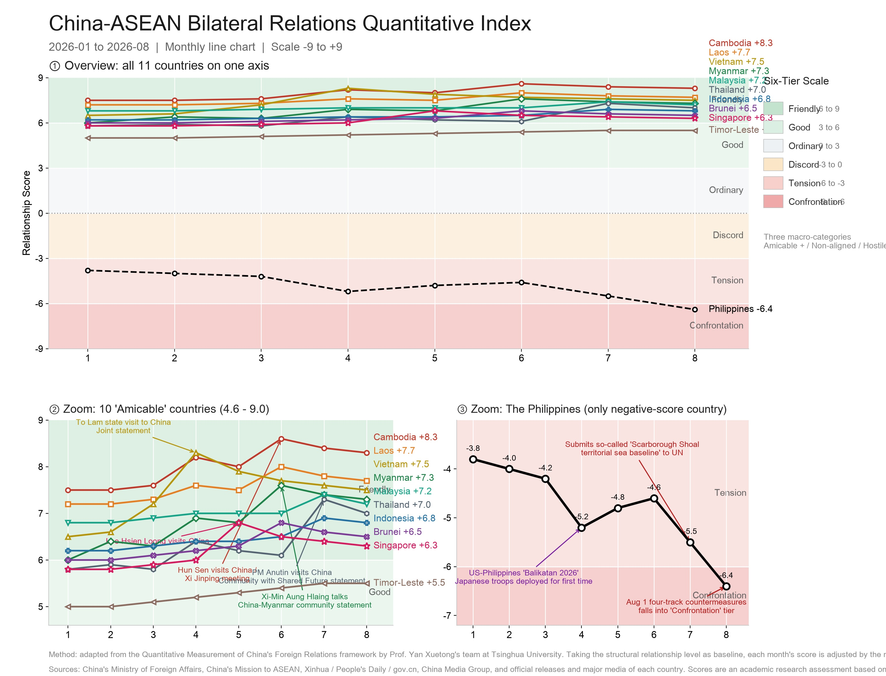

Scoring the Bond: A Monthly Index of China–ASEAN Relations, January–August 2026
Ten partners in the amicable band, one in open confrontation — a quantitative reading of the region's widening split.
China's relations with ten of its eleven Southeast Asian partners sat firmly in the "Friendly" or "Good" band through the first eight months of 2026, while the Philippines alone slid into open "Confrontation," according to a quantitative index compiled by Southeast Asia Watch using a framework adapted from Tsinghua University's Institute of International Relations.
The index converts bilateral diplomacy into a single number on a scale from −9 to +9, updated monthly. It is not an official gauge; it is a transparent, reproducible reading of verifiable public behaviour — summit photographs, signed statements, military exercises and diplomatic protests — rendered as comparable data. Its headline finding is stark: the China–ASEAN relationship is, with one conspicuous exception, the most uniformly amicable in its modern history.


How the score is built
The method adapts the Quantitative Measurement of China's Foreign Relations framework developed by Professor Yan Xuetong's team at Tsinghua University. Bilateral relations are treated as a continuous variable observable through public diplomatic behaviour and expressed on one −9 to +9 scale, divided into three macro-categories and six graded tiers:
| Macro-category | Tier | Range | Character |
|---|---|---|---|
| Hostile | Confrontation | −9 to −6 | Open rivalry, coercion |
| Tension | −6 to −3 | Frequent friction, recrimination | |
| Non-aligned | Discord | −3 to 0 | Net-negative, below rivalry |
| Ordinary | 0 to +3 | Neutral, transactional | |
| Amicable | Good | +3 to +6 | Cooperative, expanding |
| Friendly | +6 to +9 | Close, institutionalised |
Each month's score is baseline-anchored: it begins from the prior month's value and is adjusted by that month's verifiable events. Weighting follows three axes. Nature — positive events add, negative subtract. Tier of actor — head-of-state or government-head engagement (±0.5 to ±0.9) outweighs ministerial dialogue (±0.2 to ±0.5), which outweighs working-level contact (±0.1 to ±0.3). Domain — political, security and landmark economic agreements carry the largest loadings (±0.3 to ±0.6 for a flagship signing); maritime confrontation or a legal provocation cut the steepest (−0.5 to −1.2).
Two rules keep the series honest. Accumulation: multiple events in one month are summed, but the net monthly move is capped at ±2.0 so a single busy month cannot overstate a structural shift. Decay: in event-less months the score drifts back toward each country's structural baseline at roughly 0.1–0.3 points. Baselines are set by formal status — a Community with Shared Future or Comprehensive Strategic Partnership anchors the upper-amicable band; the Philippines' baseline sits negative, set by unresolved maritime disputes and its mutual-defence treaty with the United States.
Reading the chart
The three-panel figure tells one story with unusual clarity: a region almost uniformly amicable, with a single severe exception. Across January to August, ten of the eleven dyads sit inside the amicable macro-category; the Philippines alone declines from "Tension" into "Confrontation." The gap between the Philippines line and the nearest friendly partner — Singapore at +6.3 — exceeds twelve points, a chasm wider than the entire friendly band.
Within the friendly bloc, the mainland Southeast Asia cluster is the engine. Cambodia, Laos, Vietnam, Myanmar and Thailand all reach the "Friendly" grade (≥+6). Three peak nodes stand out. The first is April, when Vietnam's Communist Party General Secretary and State President Tô Lâm paid a state visit to China; Vietnam's line jumps to +8.3, its year high, with a joint statement calling bilateral ties "the best in history." The second is June, when the leaders of Cambodia (Hun Sen), Laos (Thongloun) and Myanmar (Min Aung Hlaing) all visited China within weeks; Cambodia spikes to +8.6 and Myanmar to +7.6 as Xi and Senior General Min Aung Hlaing issued a declaration on building a China–Myanmar community with a shared future. The third is July, when the China–ASEAN Foreign Ministers' Meeting in Manila coincided with Thai Prime Minister Anutin Charnvirakul's official visit; Thailand leaps from +6.1 to +7.3, and the multilateral meeting adds a small collective lift.

The maritime ASEAN economies — Malaysia (+7.2), Indonesia (+6.8), Brunei (+6.5) and Singapore (+6.3) — are friendly but structurally capped. Their ceilings show as gentler slopes: Indonesia rises only slowly because recurring friction over Chinese-invested nickel policy acts as a steady brake; Singapore's May bump (Emeritus Senior Minister Lee Hsien Loong's visit, +6.0 to +6.8) fades by July as the event's effect decays. These states balance deep trade with China against security ties to the United States and Japan, and the index captures that equilibrium as a stable mid-to-high friendly score rather than a soaring one.
Timor-Leste is the quiet newcomer. Having joined ASEAN as the eleventh member in October 2025, its line sits lowest among the amicable group at +5.5 — flat and undramatic. This is not weakness but immaturity: a young, low-volume partnership free of major disputes, producing a steady baseline rather than event-driven spikes.
The Philippines is the chart's defining anomaly. Its line descends almost monotonically from −3.8 in January to −6.4 in August, crossing from Tension into Confrontation. Three events drive the drop: the April "Balikatan 2026" exercises (over 17,000 troops, with Japanese forces deploying to the Philippines for the first time and a U.S. Tomahawk test on Luzon); the late-July sequence in which Manila lodged repeated reef incursions and, on July 31, submitted a so-called "Scarborough Shoal" baseline chart to the UN while seeking a 350-nautical-mile extended continental shelf; and the August 1 four-track Chinese response — diplomatic rejection, Southern Theatre Command exercises, coast-guard interdiction drills, and a new national nature-reserve regulation for the shoal. As ASEAN chair for 2026, Manila's confrontational posture toward Beijing simultaneously weakened its own chairmanship's centrality.

The method leaves visible fingerprints. The decay effect is clearest in Singapore and Thailand: each post-visit peak erodes within one to two months absent a follow-up, exactly as the baseline rule predicts. The accumulation cap is respected everywhere — Thailand's +1.2 July jump is the largest single-month move and stays under the ±2.0 ceiling. The chart is therefore not only a record of events but a demonstration of the scoring logic working as designed.
Outlook to December 2026
(Projection, central scenario — not a prediction of specific events.) Extending the baseline logic, scores drift toward each country's structural baseline absent major new events; anticipated recurring diplomacy — the annual China–ASEAN Summit, typically convened with the Q4 ASEAN Summit, plus expected 2+2 and leader-level follow-ups — adds modest positive loadings.
| Country | Aug | Sep | Oct | Nov | Dec | Year-end tier |
|---|---|---|---|---|---|---|
| Cambodia | +8.3 | +8.3 | +8.3 | +8.4 | +8.4 | Friendly |
| Laos | +7.7 | +7.6 | +7.7 | +7.8 | +7.8 | Friendly |
| Vietnam | +7.5 | +7.4 | +7.5 | +7.6 | +7.6 | Friendly |
| Myanmar | +7.3 | +7.2 | +7.3 | +7.3 | +7.2 | Friendly |
| Malaysia | +7.2 | +7.2 | +7.3 | +7.4 | +7.4 | Friendly |
| Thailand | +7.0 | +6.9 | +7.0 | +7.0 | +7.1 | Friendly |
| Indonesia | +6.8 | +6.8 | +6.9 | +7.0 | +7.0 | Friendly |
| Brunei | +6.5 | +6.6 | +6.6 | +6.6 | +6.7 | Friendly |
| Singapore | +6.3 | +6.3 | +6.6 | +6.4 | +6.5 | Friendly |
| Timor-Leste | +5.5 | +5.5 | +5.6 | +5.7 | +5.8 | Good |
| Philippines | −6.4 | −6.2 | −6.0 | −5.8 | −5.6 | Confrontation |
The ten amicable partners hold their grades through year-end; Timor-Leste edges from "Good" toward the lower edge of "Friendly"; the Philippines, under a central scenario of managed de-escalation, recovers marginally to about −5.6 while remaining in Confrontation. Two risks flank that path — a fresh maritime standoff could push it toward −7.0, while a surprise leader-level meeting could arrest the decline nearer −6.0. Under any scenario, the Philippines is the only dyad that will not re-enter the amicable band in 2026.

References
- Ministry of Foreign Affairs of China (mfa.gov.cn) — readouts of Wang Yi's meetings with ASEAN counterparts, including the China–ASEAN Foreign Ministers' Meeting, Manila, July 22, 2026.
- Xinhua / news.cn — report on Thai Prime Minister Anutin Charnvirakul's official visit to China, July 16–20, 2026, and the Joint Statement on a China–Thailand Community with Shared Future: news.cn/politics/leaders/20260720/...; MFA readout: mfa.gov.cn/.../t20260720_11986868.shtml.
- Xinhua / People's Daily — coverage of Tô Lâm's state visit to China (April 2026), Hun Sen's visit (June 2026), and the Xi–Min Aung Hlaing talks and China–Myanmar community declaration (June 2026).
- Reuters; Manila Times; Philippine Department of Foreign Affairs — "Balikatan 2026" exercises (April); Philippines' July 31 UN submission on the Scarborough Shoal baseline and extended continental shelf; China's August 1 four-track response.
- Government of China (gov.cn) / MFA — China–ASEAN FTA 3.0 upgrade protocol; two-way trade exceeding $1 trillion in 2025; 2026 as the 5th anniversary of the China–ASEAN Comprehensive Strategic Partnership.
- Yan Xuetong, Institute of International Relations, Tsinghua University — Quantitative Measurement of China's Foreign Relations (methodological basis for the six-tier scale and event-weighting logic).
GeopoliticsChina–ASEAN Quantitative IndexSouth China Sea
One Line, Two Regions: Reading the China–ASEAN Divide
The 2026 index draws a single line through a region that no longer reads as one. Ten partners cluster in the amicable band; the Philippines drops alone into confrontation. The split is not a measurement artifact but a material argument about where Southeast Asia's center of gravity now sits.
Manila's South China Sea pendulum mirrors ASEAN's oldest dilemma: how to hold the chair of the association while squaring a defence treaty with Washington against a relationship with Beijing that the other nine have turned into a structural asset. Cambodia, Laos, Vietnam, Myanmar and Thailand did not arrive at "Friendly" by accident. Each bound its score to an institution — a community with a shared future, a 2+2 dialogue, a 3+3 mechanism — turning summit photographs into a durable baseline.
The benign reading is that economics decides. Two-way trade surpassed $1 trillion in 2025 and the upgraded FTA 3.0 locks in another decade of integration. Yet the Philippines shows that commerce alone does not bind: Manila trades heavily with China even as its score falls. The decisive variable is political architecture, not commerce.
For the association, the cost is coherence. A chair that sits in confrontation with the bloc's largest partner weakens the very multilateralism it is meant to steward. The index, then, is not merely a scoreboard of eleven bilateral ties. It is a mirror held up to ASEAN's asymmetric position — ten countries leaning in, one leaning out, and a community whose unity is measured in the gap between them.